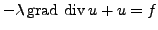

Some problems in applied mathematics related, for example, to fluid flow, solid mechanics, magnetohydrodynamics or electromagnetism problems are governed by equations in which a grad-div term is dominant. This circumstance makes the corresponding algebraic equations appearing in the discrete problem difficult to solve efficiently. In particular, standard multigrid algorithms are not effective when applied to grad-div dominating problems because the eigenspace associated to the minimal eigenvalue of the discrete operator contains many arbitrary oscillatory eigenvectors. These can neither be reduced by standard smoothing procedures, nor be well represented on coarse grids
In the finite element context, multigrid methods for this kind of problems were analyzed by Arnold et al. [1], Hiptmair and Hoppe [2] and Vassilevski and Wang [3]. In this talk robust distributive smoothers are proposed for discrete systems of equations that arise when discretizating with finite differences on staggered grids. This kind of discretization preserves the main properties of the differential operator in its discrete form. Similarly to the continuous case, this property permits to reformulate the discrete problems as a decoupled system where the Laplacian is the dominant operator.
In particular we study the model problem
, where  is a large positive number as well as more
realistic problems as nearly incompressible elasticity and secondary
consolidation Biot's model. Some numerical experiments show that
distributive smoothing methods give small multigrid convergence factors
that are independent of problem parameters and of the mesh sizes in space
and time.
is a large positive number as well as more
realistic problems as nearly incompressible elasticity and secondary
consolidation Biot's model. Some numerical experiments show that
distributive smoothing methods give small multigrid convergence factors
that are independent of problem parameters and of the mesh sizes in space
and time.
References: